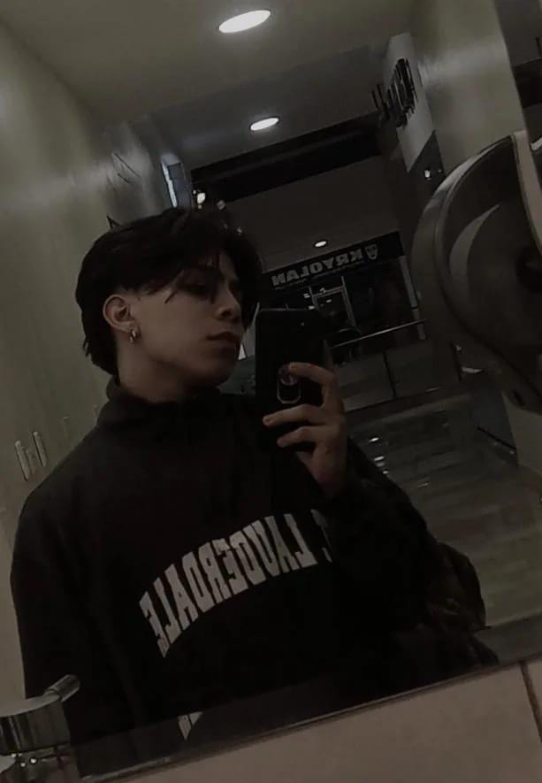

Biografía de Werner Paredes
Werner Wilfrido Paredes Paniagua nació el 9 de enero de 2007 en Guatemala. Actualmente, tiene 18 años y es estudiante de informática, cursando el 6to grado de Diversificado.
Formación Académica
- Parroquial Francisco Peláez en Nivel Pre-Primaria
- Jugando Aprendo en Nivel Primaria
- Centro Educativo Técnico Laboral Kinal en Nivel Básico (hasta la fecha)
Desde joven, Werner ha mostrado un gran interés por la tecnología, el dibujo y la programación. A lo largo de su educación, ha adquirido conocimientos relacionados con la creación de videojuegos y sitios web, inspirándose en títulos como Minecraft, Resident Evil y Mortal Kombat.
Expectativas y Planes
Werner espera graduarse este año y continuar trabajando en el lugar donde realizó sus prácticas. Planea dedicar gran parte de su tiempo a estudiar y mejorar en áreas como programación e inglés para tener mejores oportunidades laborales en el futuro.
Curiosidades
- Es apasionado por la música, especialmente el rock y el metal. En 2022, formó una banda influenciada por My Chemical Romance.
- La carrera alternativa que consideraba era arquitectura.
- Uno de sus sueños es estudiar en la Universidad del Valle de Guatemala y trabajar en el extranjero.
Logros
Werner ha sido abanderado durante su tiempo en la primaria y recientemente presentó uno de sus proyectos en la Expo Kinal de 2024.
Gustos y Pasatiempos
Entre sus intereses se encuentran la música, el deporte (especialmente el fútbol y el baloncesto), el patinaje y el dibujo.
Albumes Favoritos

The Black Parade
The Black Parade es el tercer álbum de estudio de la banda estadounidense de rock My Chemical Romance. Cuenta la historia de un personaje moribundo conocido como el Paciente, que sufre de cáncer.
Escucharlo
The Number Of The Beast
The Number of the Beast es el tercer álbum de estudio de la banda británica de heavy metal Iron Maiden, publicado el 22 de marzo de 1982. Este trabajo es el primero con el vocalista Bruce Dickinson y el último con el baterista Clive Burr.
Escucharlo
Meddle
Meddle es el sexto álbum de estudio de la banda británica de rock progresivo Pink Floyd, editado en octubre de 1971. Se grabó en varios estudios de grabación de la zona de Londres, incluyendo los Abbey Road Studios.
EscucharloPeliculas Favoritas

Clockwork Orange
Clockwork Orange relata las desventuras de Alex DeLarge, un delincuente juvenil cuyos placeres son: escuchar música clásica, el sexo, las drogas y la ultraviolencia.
Ver
Trainspotting
Trainspotting narra la cruda historia de un grupo de jóvenes heroinómanos de los suburbios de Edimburgo, cuyas únicas aspiraciones son consumir sustancias adictivas.
Ver
The Doors (Film)
The Doors es una película biográfica estadounidense sobre la banda de rock del mismo nombre, dirigida por Oliver Stone y estrenada en 1991.
Ver